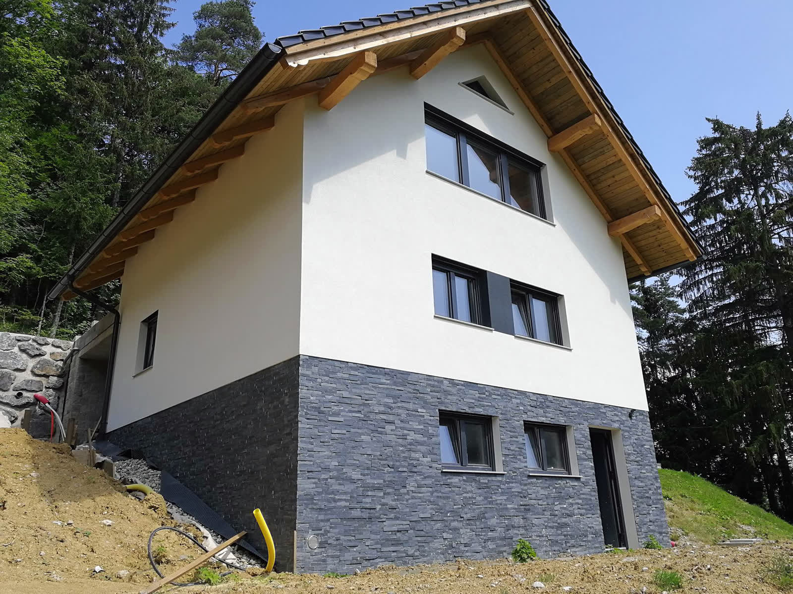
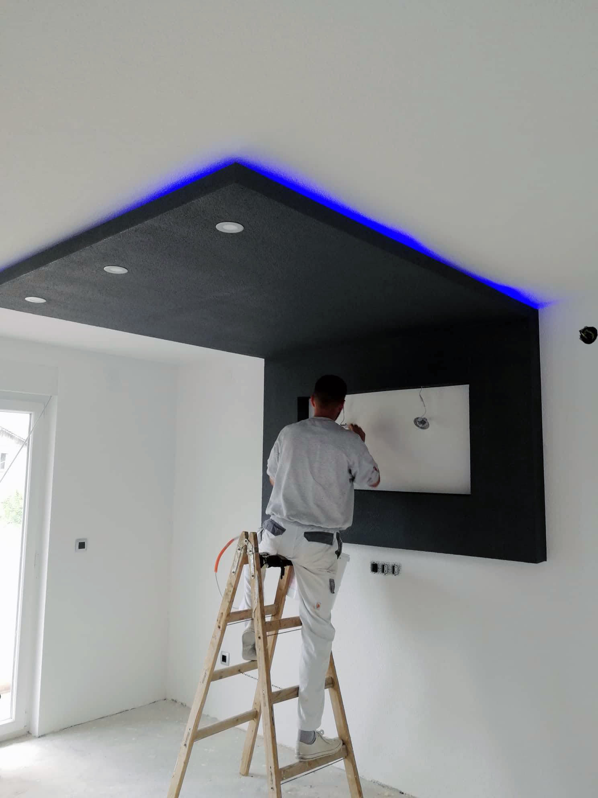
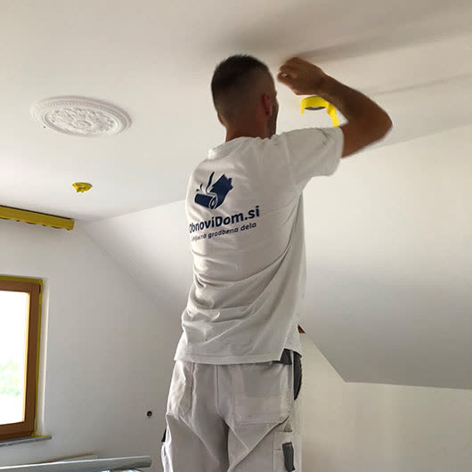
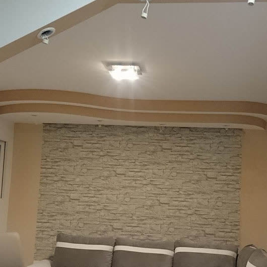
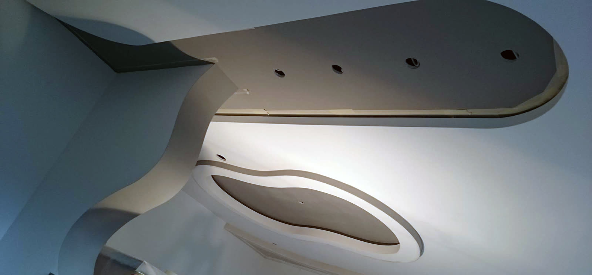
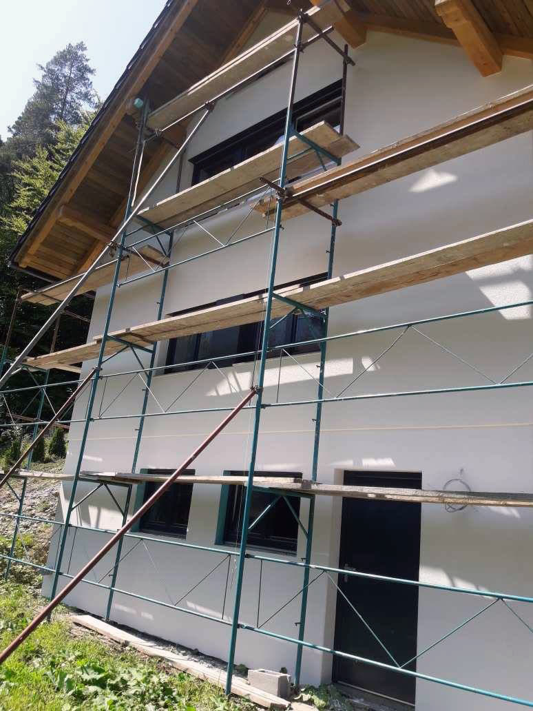

Fasade, pleskanje, suhomontaža.
Zaključna gradbena dela na Koroškem: od toplotno izolacijske fasade do spuščenega stropa in zadnjega sloja barve.
- DejavnostSlikopleskarstvo, fasaderstvo, suhomontažna in adaptacijska dela
- PosebnostLasten gradbeni oder, brezplačno svetovanje, hiša na ključ
- SedežČečovje 31, 2390 Ravne na Koroškem
- DosegljiviPon-Sob 7:00 - 17:00
 Fasada · kamniti podzidek
Fasada · kamniti podzidek
Naročnikom smo vedno na razpolago pri predhodnem brezplačnem svetovanju in predlagamo najboljšo rešitev.
Izposoja in montaža gradbenega odra ter zaščitne opreme, zato fasada ne čaka na tretjega izvajalca.
Z regijskimi strokovnjaki za keramiko, vodovod in elektroinštalacije izpeljemo celotno obnovo.
Kaj delamo
Specializirani smo za vse vrste slikopleskarskih del, izdelavo toplotno izolacijskih fasad, adaptacijo domov in poslovnih prostorov ter suhomontažna dela.
Slikopleskarstvo
Vsa notranja in zunanja slikopleskarska dela.
Fasaderstvo
Izdelava toplotno izolacijskih fasad po najnovejših standardih.
Suhomontažna dela
Montažne predelne stene, spuščen strop, suhi estrihi in ostala suhomontažna dela.
Adaptacijska dela
Adaptacija hiš, stanovanj ter poslovnih in nebivalnih prostorov.
Gradbeni oder
Izposoja in montaža gradbenega odra ter zaščitne opreme.
Svetovanje
Nudimo razna svetovanja s področja gradbenih del.
Z naših gradbišč










Ena ekipa, celotna obnova
Naša ekipa že vrsto let sodeluje z najboljšimi strokovnjaki v regiji za izvedbo keramičarskih, vodovodarskih, elektroinštalacijskih in ostalih gradbenih del. Zagotovimo vam lahko hišo na ključ.
- Pleskanje
- Fasade
- Knauf
- Tapete
- Beljenje sten
- Predelne stene
- Adaptacija doma
- Estrihi
- Stenske obloge
- Napušči
- Keramičarstvo
- Razne inštalacije
Želite obnoviti svoj dom?
Pokličite ali pišite. Pred začetkom del se z vami brezplačno posvetujemo.
070 820 267Po navedbi podjetja delajo z materiali KEMA, Baumit, Caparol, Weber, JUB in Knauf.
- E-pošta
- info@obnovidom.com
- Delovni čas
- Ponedeljek do sobota, 7:00 - 17:00